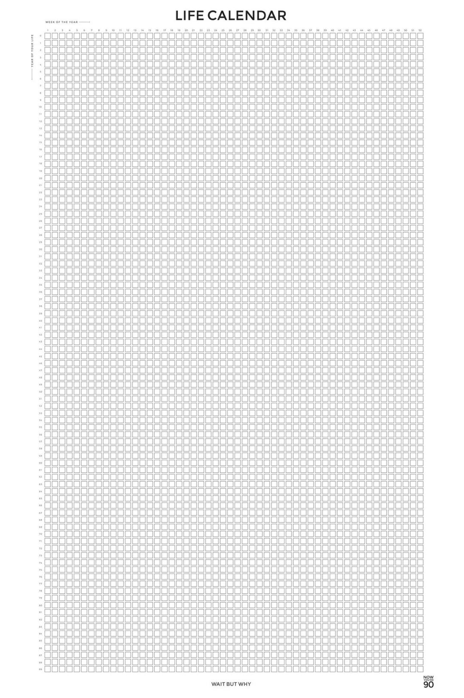
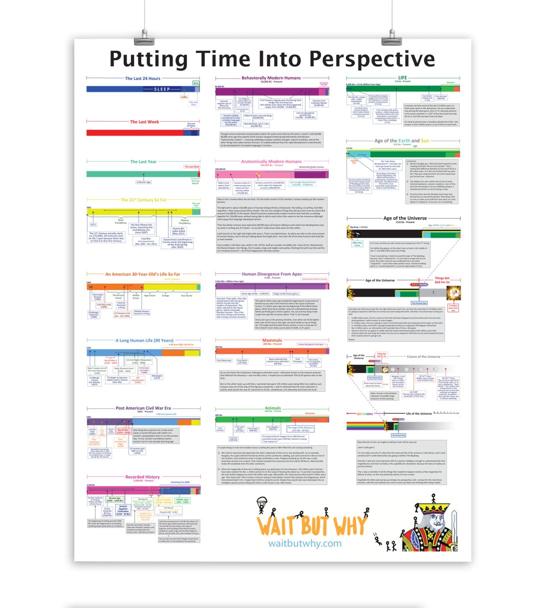
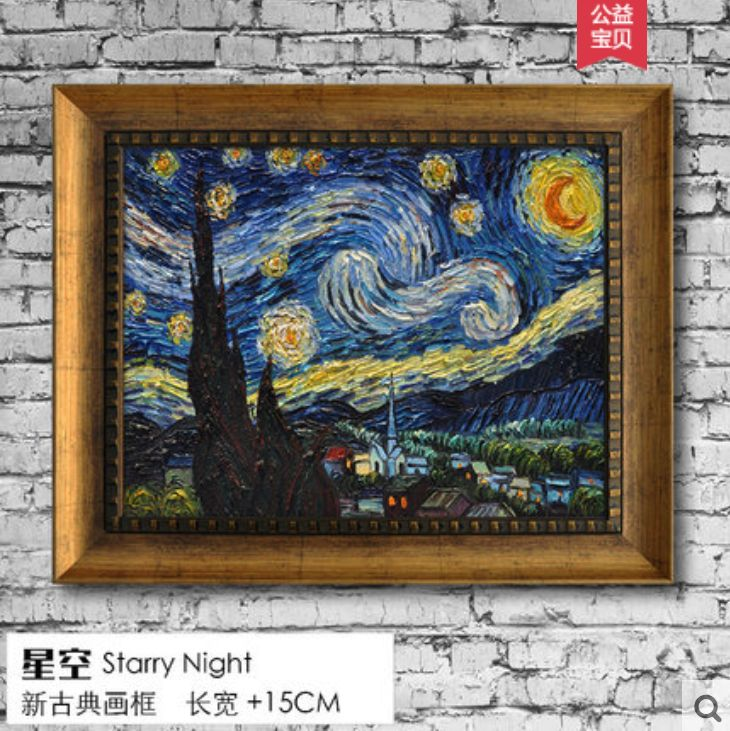
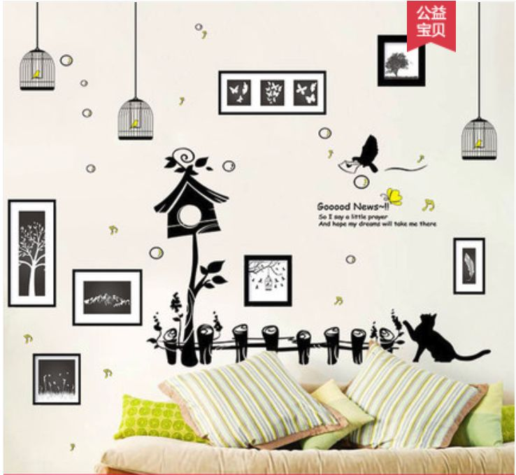
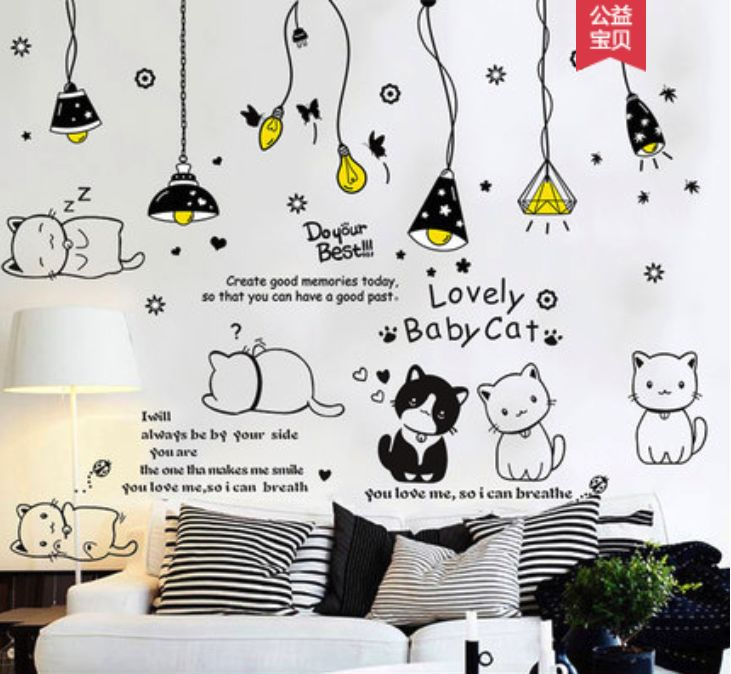
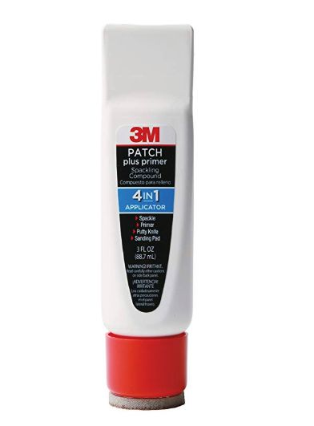
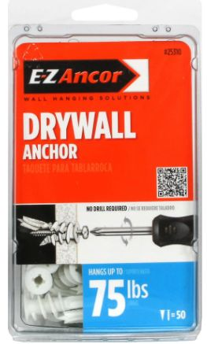
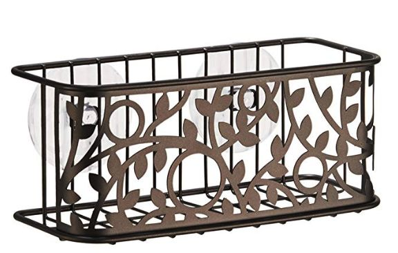

最近到了年底，生活一下子松弛了下来。不过因此也有机会花心思改善一下家里的陈设。
在美国一直都习惯了租房子住。因为每隔一两年，甚至几个月就好搬一次家，从来也没有好好想过要怎么装饰，布置。工作了以后慢慢感觉是时候稍微在这方面花点心思了。
毕竟一时半会儿也买不起房子，总不能这么多年就一直把家里搞成临时住所的样子吧。而且装饰的能力也是需要慢慢培养的，没有大量的练习与试错很难提高。
这篇就先讲讲我在墙上布置的东西，文中提到了很多店铺的名字，还请不要认为我是在打广告，毕竟我这个阅读量暂时还接不到广告。。。。
知识性小海报
最一开始我在墙上放的是从WaitButWhy Store那边买来的Life Calendar以及Putting Time Into Perspective的海报。这些装饰主要是功能性的，并没有什么装饰的价值。
Life Calendar的海报更多是提醒自己人生的短暂。既然人生这么短，一个人一辈子能选择的努力方向并不多，因此一旦选定了目标，就要坚持向着自己的短期目标努力，从而实现基于此的中期以及长期目标
（有一个系列文章蛮经典的，专门讲这些目标的关系与作用的，在Google上搜索“如何成为优秀开发人员”可以找到一个系列）。

Putting Time Into Perspective的海报则是时刻提醒自己，从整个宇宙的历史长河来看，我们自己有多么的渺小。既然是如此地渺小，很多时候还是不要强求，要顺应历史的大趋势。

不好意思扯远了。。。
手工仿制的油画
我自己小时候一直蛮喜欢梵高的，尤其是他的《星空》，是我乍一看就能够欣赏的油画艺术作品。
把这种世界名作的真迹挂在家里自然是不可能了，打印一副也略显cheap，买一副仿的其实还蛮不错的。反正以我自己的欣赏能力，也看不出来区别嘛。
我自己是在淘宝上的店铺“印象斑斓旗舰店”买的，店铺里搜索“手工名画”就有了。从国内淘宝集运过来，然后再在yelp上找一个店铺装一下框就看起来蛮像样的了。

美国的 https://www.handmadepiece.com 似乎也有这种，我自己没买过，看起来是要比这样折腾便宜一点。
这种手工画作的好处是它会有油画的那种凹凸不平的笔触。从远处看的时候会跟近看很不一样，在家里体验这种感觉还是蛮开心的。
墙贴
油画虽然好看，但是孤零零地挂在墙上还是略显寂寞。把它跟知识性小海报挂在一起也非常不搭。
淘宝上还有卖一种墙贴其实就蛮不错的。我自己是在一个叫“果果善旗舰店”的淘宝店铺买的。找一个跟油画搭配的风格，其实会让整体感觉更加和谐。


小黑板
我自己是一个记性很不好的人，有的时候要是一件事情不记下来，会反复地想起来然后忘记好几次。为了不忘记这些事情我会在脑子里开辟一块内存专门存放这些事情，还要反复提醒自己，非常分神。
在家里挂一块小黑板，并且随手把事情记下来其实还蛮方便的。不过因为是租的房子，所以在墙上开洞比较麻烦。我一开始买的是那种贴在墙面上的贴纸，后来发现擦起来非常不方便。还是那种白板比较方便。像是这样的amazon上买的带油性笔，板擦和磁铁的小白板就不错，搜索white board就能找到。
怎么把东西挂在墙上
上面提到的小黑板，油画之类的其实都需要把东西在墙上固定，这就势必需要在墙上打洞。那要怎么在墙上开洞，并且事后不被房东罚钱呢？
我去走访了一些五金店，老板跟我说很多房东反正也要重新粉刷墙面，对于小的洞你可以用这个叫Path Plus Primer的东西快速填洞，稍微大一点的可以先往里面塞满纸片，然后再用这个粉刷，这样子都能恢复到原来的样子。这个方法适用于美国这边常见的白色粉墙面。

至于打洞固定用什么比较稳，我一开始尝试着直接把螺丝钉钻入墙面，发现并不是很牢固。后来咨询了一下老爸，发现要用所谓的膨胀螺丝。
为此我去买了个小型的电钻头，先打个跟膨胀螺丝塑料差不多大小的洞，然后把膨胀螺丝套件中的较大的塑料螺丝敲入或者拧入墙内。这个塑料的膨胀螺丝一般都会很牢地固定在墙面上，最后再把膨胀螺丝套件中较小的金属螺丝钻入较大的塑料螺丝中。这样子固定的东西就很牢了，可以挂相当重的东西。

怎么把东西挂在瓷砖上
那么我们要是想在厕所挂点什么东西怎么办呢？要知道厕所里的瓷砖可是补不回来的。后来发现有这种东西，在amazon上搜索 InterDesign Vine Suction Bathroom Shower Caddy Basket就能找到。

这个东西的吸盘吸得相当牢固，特别是在光滑的瓷砖上。需要注意的是被吸附的瓷砖不能沾水，不然的话很容易滑落。
结尾
以上就是我总结的“家装”经验了，欢迎各位读者补充。
最近我还发现了一个书单，在Google上搜索“收藏的电子书单”就可以找到，上面有蛮多的好书的，在此推荐一下。